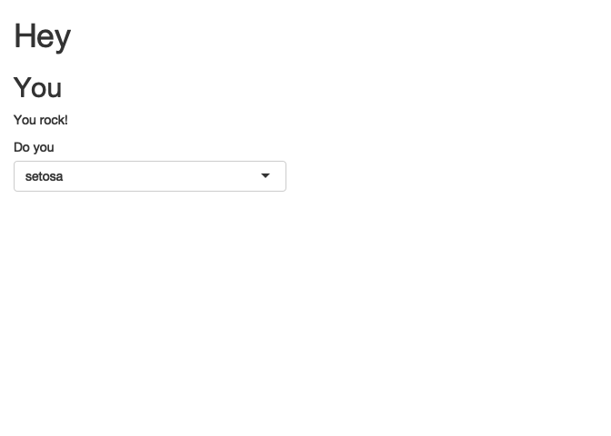

Chapter 8 A Gentle Introduction to CSS
8.1 What is CSS
8.1.1 About CSS
CSS, for Cascading Style Sheets, is one of main technologies that power the web today, along with HTML and JavaScript.
HTML is a series of tags that define your web page structure, and JavaScript is a programming language that allows you to manipulate the page (well, it can do a lot more than that, but we’re simplifying to make it understandable).
CSS is what handles the design, i.e. the visual rendering of the web page: the color of the header, the font, the background, and everything that makes a web page looks like it’s not from 1983 (again, we’re simplifying for the sake of clarity).
On every browser, each HTML element has a default style: for example all <h1> have the size 2em and are in bold, and <strong> is in bold.
But we might not be happy with what a “standard page” (with no CSS) looks like: that’s the very reason of CSS, modifying the visual rendering of the page.
If you want to get an idea of the importance of CSS, try installing extensions like Web Developer for Google Chrome. Then, if you go on the extension and choose CSS, click “Disable All Style”, to see what a page without CSS looks like.
For example, here is what rtask.thinkr.fr looks like:

And here is what it looks like without CSS:


CSS now seems pretty useful right?
8.1.2 Shiny’s default: fluidPage()
In Shiny, there is a default CSS: the one from Bootstrap 4.
As you can see if you have created a fluidPage() before, there is already styling applied.
Compare:
(no fluidPage)
library(shiny)
ui <- function(request){
tagList(
h1("Hey"),
h2("You"),
p("You rock!"),
selectInput("what", "Do you", unique(iris$Species))
)
}
server <- function(
input,
output,
session
){
}
shinyApp(ui, server)
Listening on http://127.0.0.1:3102
to (with fluidPage):
library(shiny)
ui <- function(request){
fluidPage(
h1("Hey"),
h2("You"),
p("You rock!"),
selectInput("what", "Do you", unique(iris$Species))
)
}
server <- function(
input,
output,
session
){
}
shinyApp(ui, server)
Listening on http://127.0.0.1:4017
Yes, that’s subtle, but you can see how it makes the difference on larger apps.
8.2 Getting started with CSS
CSS is a descriptive language, meaning that you will have to declare the style either on a tag or inside an external file. We will see how to integrate CSS inside your Shiny application in the next section, but before that, let’s start with a short introduction to CSS26.
8.2.1 About CSS syntax
CSS syntax is composed of two elements: a selector, and a declaration block. The CSS selector describes how to identify the HTML tags that will be affected by the style declared with key-value pairs in the declaration block that follows. And because an example will be easier to understand, here is a simple CSS rule:
h2 {
color:red;
}Here, the selector is h2, meaning that the HTML tags aimed by the style are the <h2> tags.
The declaration block contains the key-value pair telling that the color will be red.
Note that each key-value pair must end with a semicolon.
8.2.2 CSS selectors
CSS selectors are a wide topic, as there are many combinations of things you might want to select inside an HTML page.
The first type of selectors are the “standard” ones name, id, or class. These refer to the elements composing an HTML tag: for example, with <h2 id = "tileone" class = "standard">One</h2>, the name is h2, the id tileone, and the class standard27.
To select these three elements in CSS:
- Write the name as-is:
h2 - Prefix the id with
#:#tileone - Prefix the class with
.:.standard
You can also combine these elements, for example h2.standard will select all the h2 tags with a class standard, and h2,h3 will select the h2 and the h3.
You can build more complex selectors: for example div.standard > p will select all the <p> tags that are contained inside a div of class standard (CSS combinator), or a:hover, which dictates the style of the a tags when they are hovered by the mouse (CSS pseudo-class), div.standard::first-letter, that select the first letter of the div of class standard (CSS pseudo-elements), and h2[data-value="hey"], which selects all the h2 with a data-value attribute set to "hey" (CSS attribute selector).
As you can see, lots of complex selectors can be built with CSS, to target very specific elements of your UI. But mastering these complex selectors is not the main goal of this chapter, hence we will just be using standard selectors in the rest of the examples in this book.
8.2.3 CSS properties
Now that you have selected elements, it is time to apply some styles! Between the brackets of the declaration block, you will have to define a series of key-value elements defining the properties of the style: the key here is the css property, followed by its value.
For example, color: red; or text-align: center; define that for the selected HTML elements, the color will be red, or the text centered.
We will not cover all the possible properties, as there hundreds of them.
Feel free to refer to the CSS Reference page from Mozilla for an exhaustive list of available properties.